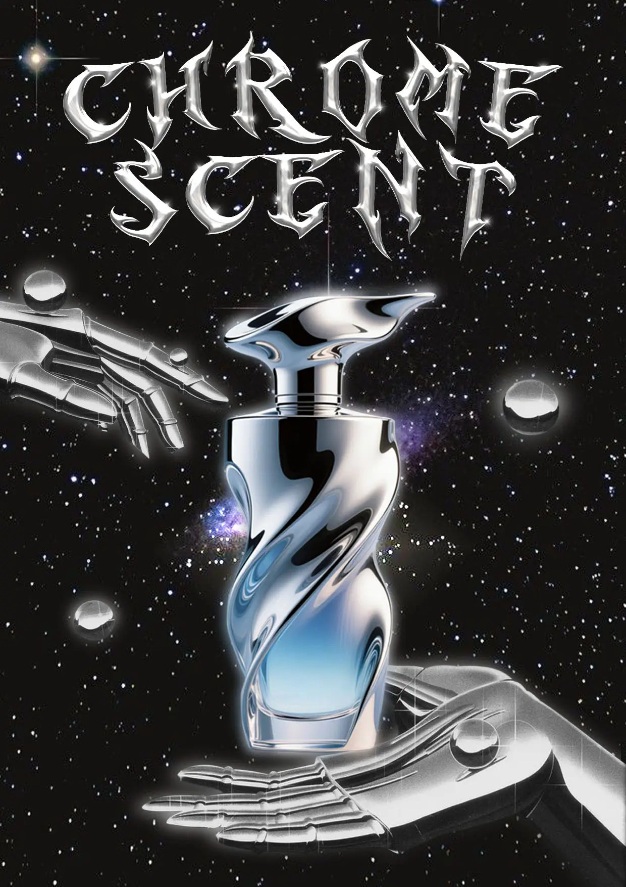
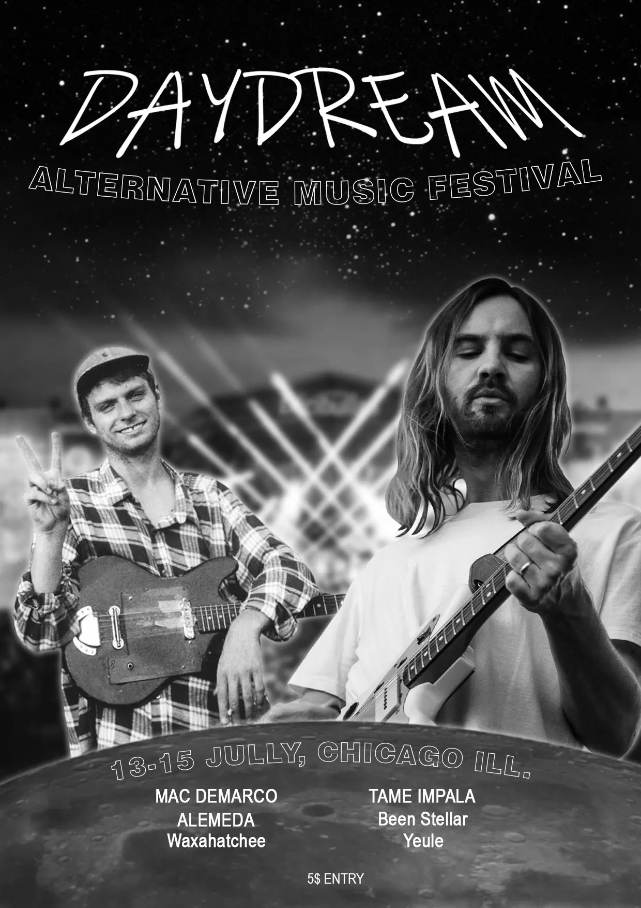
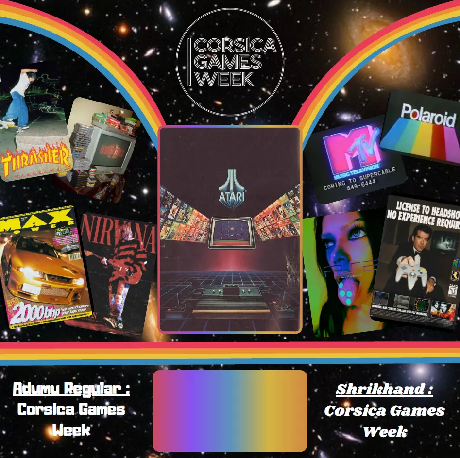
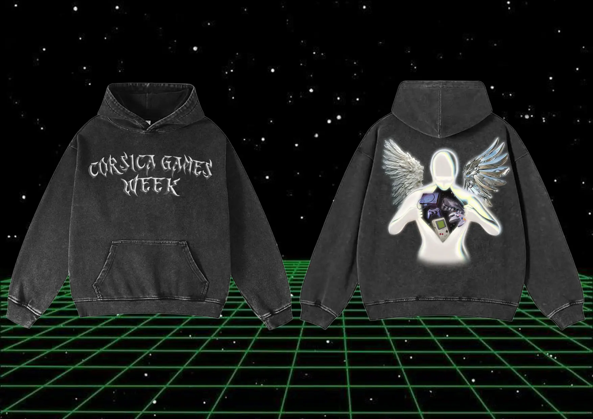
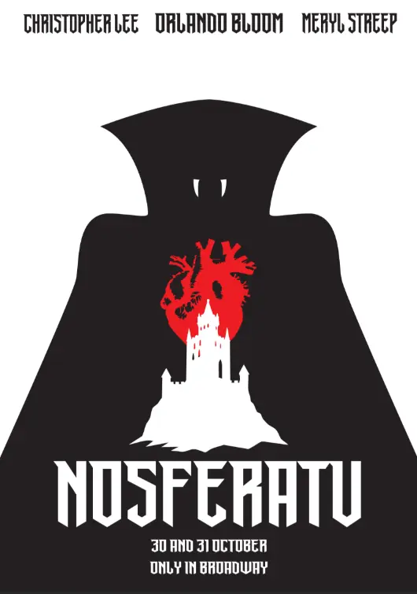

Affiche Parfum
Il s'agit d'une affiche fictive, réalisée sur photoshop pour un travail. L'objectif était de créer l'affiche d'un faux parfum, avec une direction artistique particulière, propre au produit.

Il s'agit d'une affiche fictive, réalisée sur photoshop pour un travail. L'objectif était de créer l'affiche d'un faux parfum, avec une direction artistique particulière, propre au produit.

Pour la première année de BUT MMI nous avons été choisi pour designer divers produits liés à la Corsica Games Week (convention de jeux vidéos en Corse). Voici ma version de l'affiche pour l'évènement.

Premier projet photoshop, l'idée était de créer un faux évènement musical (concert / festival), et d'en designer le poster.

Mon moodboard pour la convention, représentant l'identité visuelle que j'ai voulu adopter.

Concepts de produits dérivés de la convention, ici un sweatshirt.

Le travail ici était d'imaginer un poster promotionnel pour une fausse pièce de théatre.